Showcase
讓成果不只被看見，
也能繼續被使用。
對社群而言，成果不是裝飾，而是教學現場經驗被整理、被保存、被傳遞之後，能繼續支持更多教師與學生的專業資產。
整理各主題探究課程、任務單、材料表與實施建議，讓教師能直接引用，也能依自己的校情與學生需求進一步調整。
透過簡報、海報、研究紀錄與實作照片，讓外界看見學生如何在探究歷程中形成觀點、累積證據並完成表達。
保留教學後記、修正重點與學生學習觀察，讓每一次實施都能成為下一次課程優化的重要起點。
適合延伸成訪視、成果冊、研習簡報或對外交流頁面，幫助社群用更完整的脈絡說出一年來共同完成的工作。
從 LINE 討論紀錄可看見，社群已經累積出可被整理、延伸與再次使用的工作成果。
包含任教年資、任教科目、可分享亮點、課程困擾與希望獲得協助等欄位。
用學生探究歷程中的真實困境，促發教師之間更深入的專業對話。
包含名牌、簽到、回饋表、講師對口、器材需求、海報提醒與研習時數等流程。
先把既有照片整理成可公開使用的情境分類，讓訪客不只看到花絮，也能理解社群如何共備、實作與分享。
呈現活動空間、分組配置與工作坊整體氛圍，適合放在首頁或活動總覽。
聚焦教師之間的討論、互助與即時修正，呼應社群「一起把課做好」的核心精神。
整理筆電、平板、投影與線上互動工具的使用場景，連結到探究與實作課程設計。
收納講師引導、互動回饋與公開發表畫面，作為後續成果頁與資源頁的視覺素材。
從新相簿中先挑出 10 張最適合網站使用的照片，依「活動主視覺、講師引導、同儕協作、工具實作、成果分享、人物溫度」分類放入頁面。圖說暫採中性描述，待確認正式活動名稱與人物資訊後可再精修。

一張照片同時交代空間、講師引導與參與狀態，適合作為近期場次的封面圖。
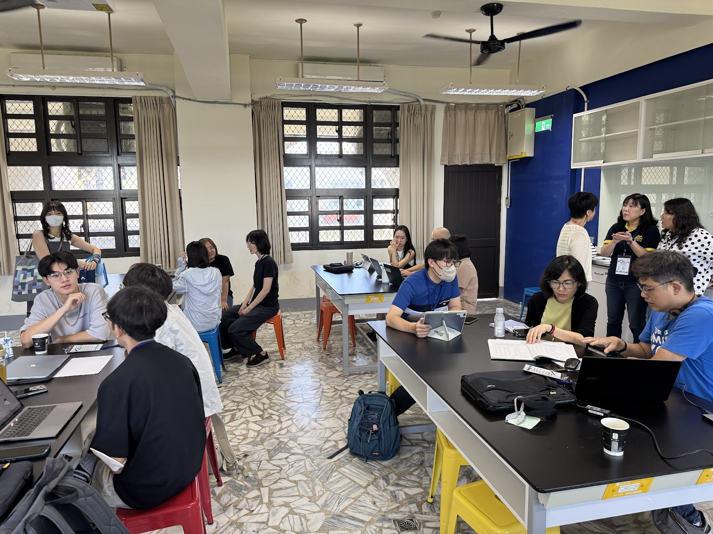
保留完整場域感，讓訪客理解這不是單次演講，而是有分組與實作的共學場景。
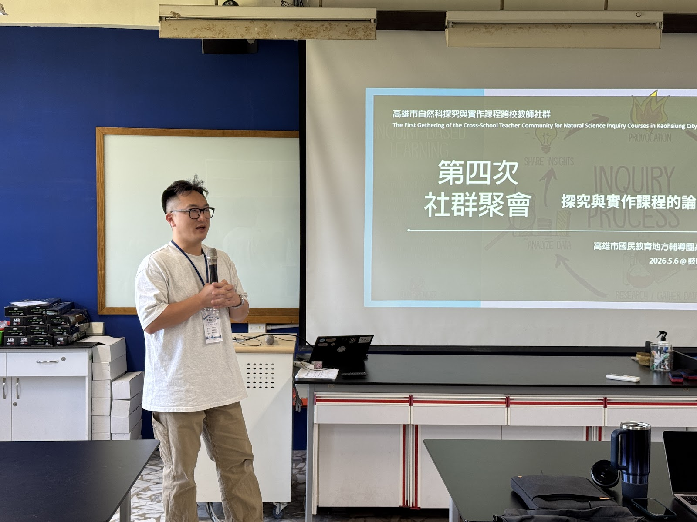
用清楚的投影片與現場說明，建立後續討論與實作的共同語言。
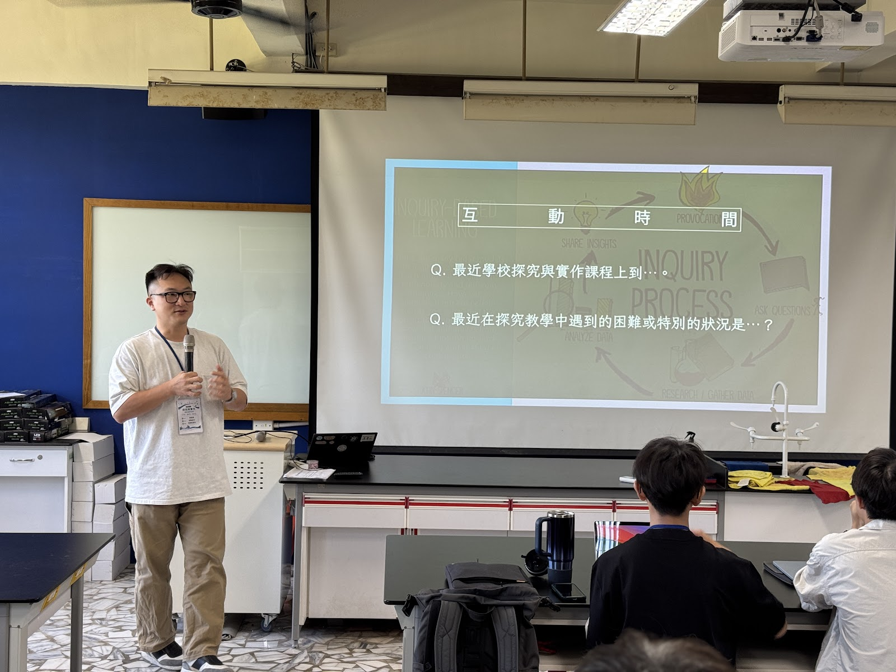
講師、投影與參與者背影形成完整教學情境，適合呈現共備流程。

共備不只是在聽，也是在彼此提問、補充與修正中慢慢成形。
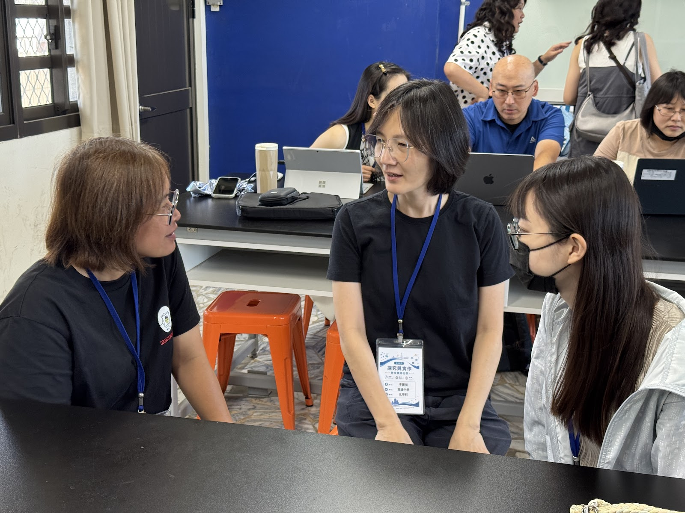
保留自然互動與專注表情，讓網站更能呈現教師共學的現場溫度。

將數位工具放在真實課程任務中操作，讓技術成為共備的一部分。

多人圍繞同一個操作任務，凸顯共備社群重視可試、可改、可帶回現場。

發言、提問與投影問題同框，適合表現活動後段的反思與交流。
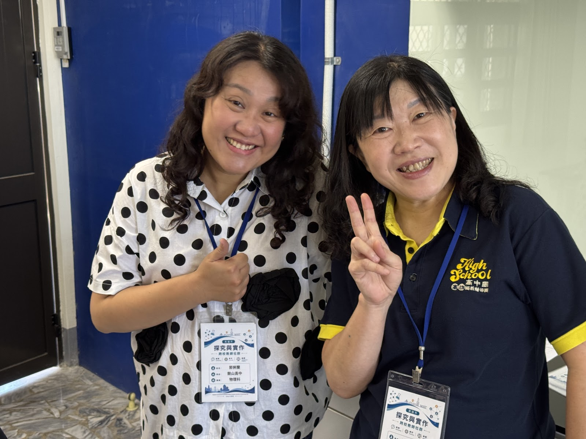
在正式成果之外，保留社群互動的親切感，讓網站更有人味。
照片不只是紀錄，也能成為網站對外傳達專業感與真實感的重要視覺資產。以下圖說先採中性描述，避免在資料未確認前誤標日期、學校或人物身分。
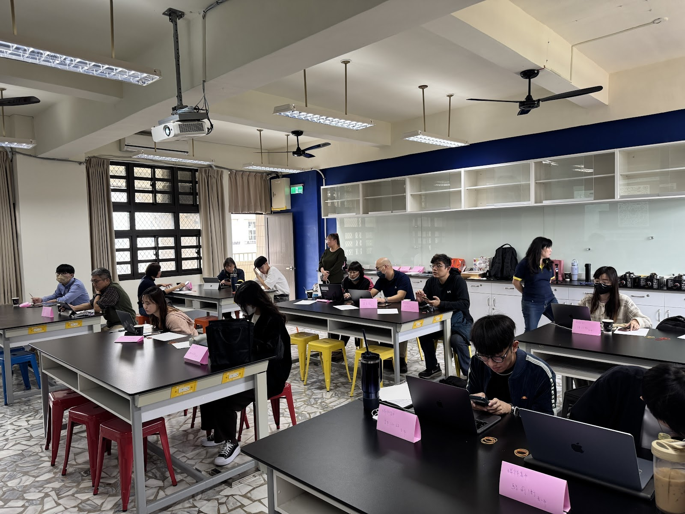
從空間配置與分組互動，看見社群把討論、實作與現場支持放在同一個學習場域。
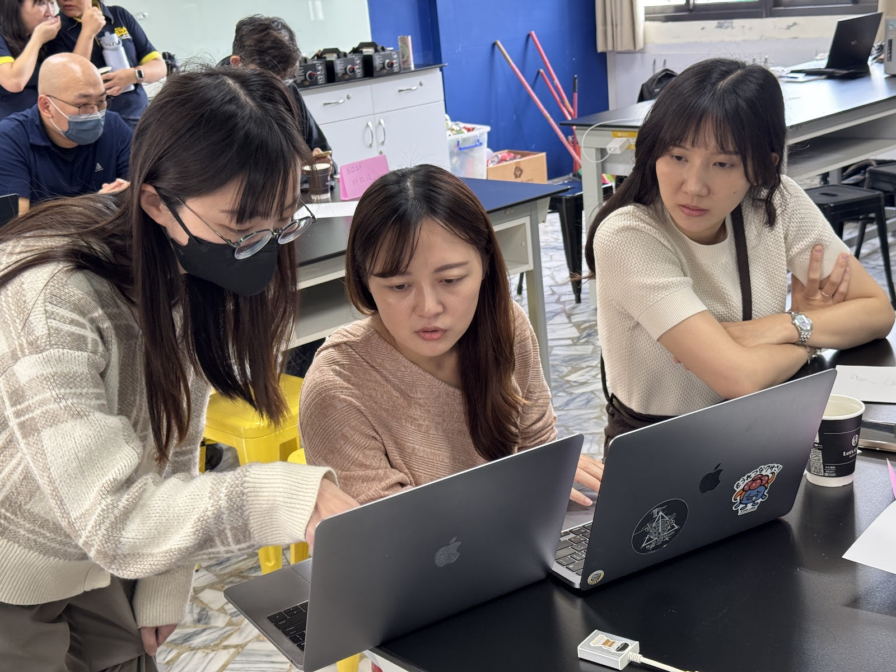
共備的價值，常發生在靠近螢幕、一起判斷下一步的片刻。
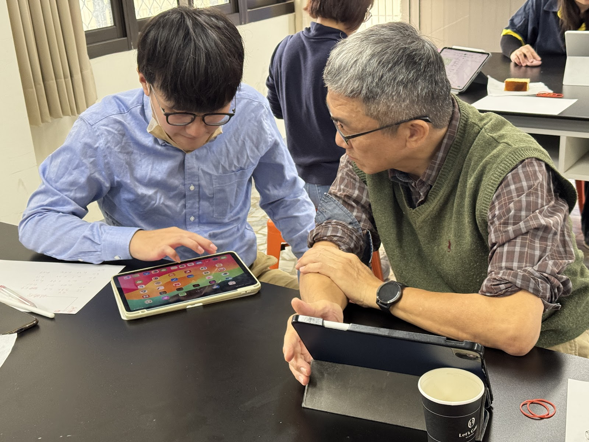
把工具操作放進課程情境，讓技術服務於探究歷程，而不是取代教師判斷。
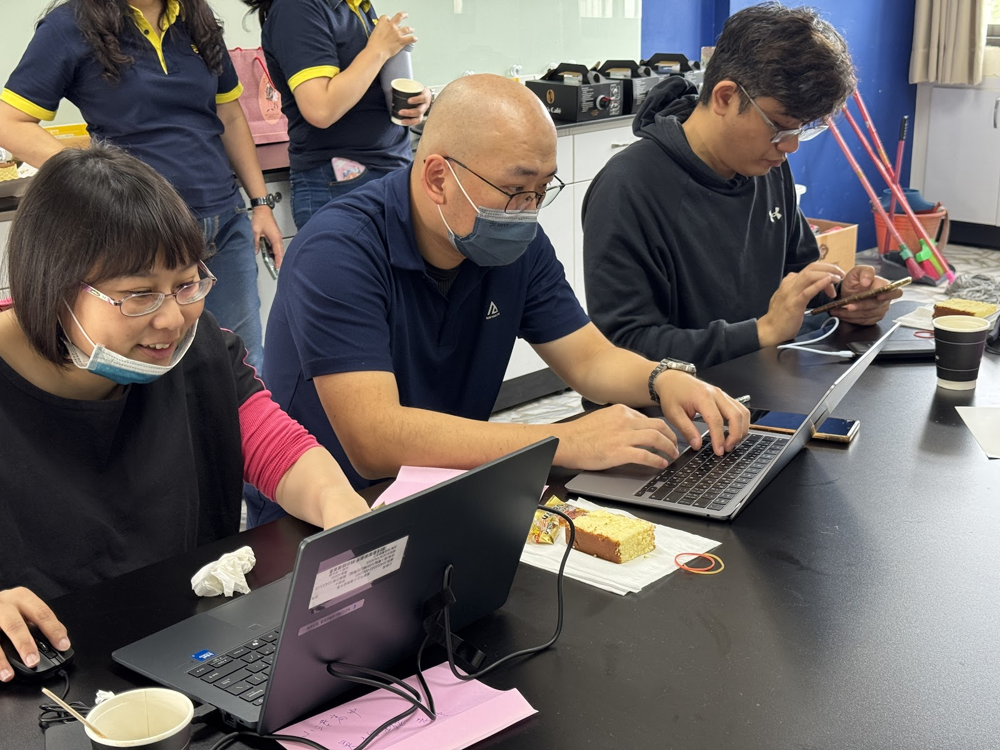
資料、設備與討論同時展開，讓課程設計能在現場被測試與調整。
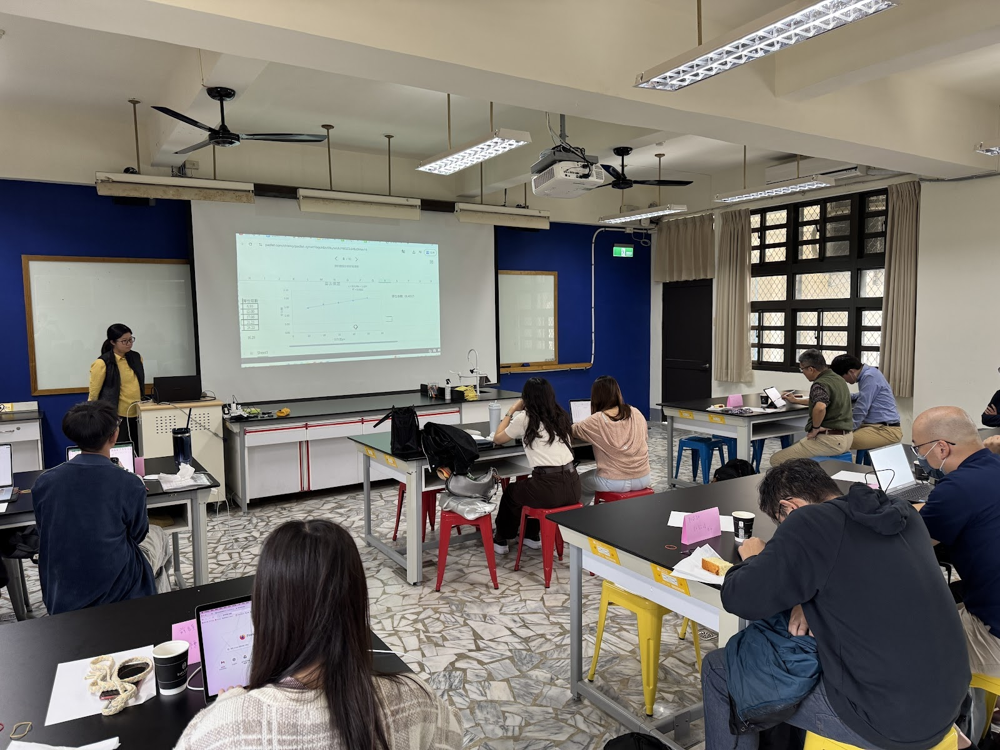
透過示範、提問與現場操作，把共備主題轉化成教師可帶回去使用的做法。
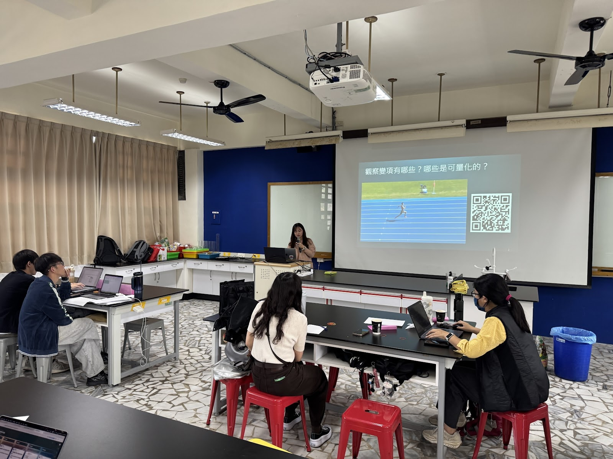
分享不是句點，而是把現場回饋整理成下一輪共備起點的過程。